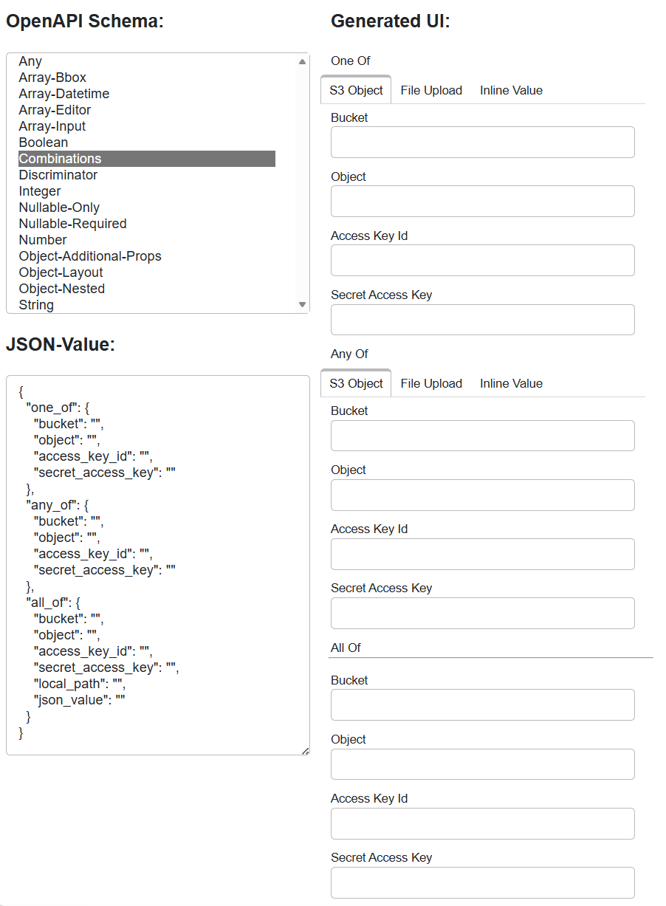

gavicore.ui Description
The gavicore.ui package contains the code to generate widgets and panels
- from plain OpenAPI Schema instances of type Schema, and
- from input instances within a process, i.e., InputDescription instances contained in a ProcessDescription instance.
The design of the framework's core is neutral with respect to the target UI
library. An implementation that generates UIs for the Panel library
is located in the gavicore.ui.panel package. It is used by
the Cuiman cuiman.gui.Client to generate UIs for the
OpenAPI schemas of the inputs of a selected process in Jupyter Notebooks.
The customization of the GUI generation in Cuiman is described
here.
Programming Model
The framework entry point to generate UI from an OpenAPI schema is the FieldGenerator class that is configured with FieldFactoryRegistry populated with one or more FieldFactory implementations.
The FieldFactoryBase class eases implementing factories for custom field types.
The following snipped explains the programming model:
from gavicore.models import Schema
from gavicore.ui import FieldGenerator, FieldMeta, FieldFactoryRegistry
# what is needed:
# --- factories that generate fields from metadata (required)
from mylib import MyFieldFactory1, MyFieldFactory2
# --- observer for value changes in the generated UI tree (optional)
from mylib import MyViewModelObserver
# --- top-level field metadata, e.g. from OpenAPI Schema (required)
my_schema = Schema(**{...})
my_field_meta = FieldMeta.from_schema(my_schema)
# --- an initial value for the UI (optional)
my_value = {}
# Generator setup:
registry = FieldFactoryRegistry()
registry.register(MyFieldFactory1())
registry.register(MyFieldFactory2())
generator = FieldGenerator(registry)
# Generator usage:
field = generator.generate_field(my_field_meta)
# Then:
# --- populate UI fields
field.view_model.value = my_value
# --- observe value changes in UI fields
my_observer = MyViewModelObserver()
field.view_model.watch(my_observer)
# --- and do something to render field.view
Framework Overview
The following class diagram provides an overview of the classes and
interfaces in gavicore.ui:
---
config:
class:
hideEmptyMembersBox: true
theme: default
---
classDiagram
direction LR
Field ..> FieldMeta
Field --> View
Field --> gavicore.ui.vm.ViewModel
FieldBase --|> Field
gavicore.ui.vm.ViewModel --> FieldMeta
class Field {
meta: FieldMeta
view_model: ViewModel*
view: Any*
}
class FieldBase {
meta: FieldMeta
view_model: ViewModel
view: Any
_bind()*
}
class FieldMeta {
name: str
schema: Schema
widget: str
layout: FieldLayout
order: int
advanced: bool
title: str
description: str
from_schema(schema)$ FieldMeta
from_input_description(input)$ FieldMeta
from_input_descriptions(inputs)$ FieldMeta
}
---
config:
class:
hideEmptyMembersBox: true
theme: default
---
classDiagram
direction TB
FieldContext --> FieldMeta
FieldFactory ..> Field: create
FieldFactory ..> FieldContext: use
FieldFactory ..> FieldContext: use
FieldFactoryBase --|> FieldFactory
FieldGenerator ..> FieldContext : create
FieldGenerator --> FieldFactoryRegistry
FieldFactoryRegistry *--> FieldFactory
class FieldFactory {
get_score(meta: FieldMeta)* int
create_field(ctx: FieldContext)* Field
}
class FieldFactoryBase {
get_score(meta: FieldMeta) int
get_boolean_score(meta: FieldMeta)* int
get_integer_score(meta: FieldMeta)* int
get_..._score(meta: FieldMeta)* int
create_field(ctx: FieldContext) Field
create_boolean_field(ctx: FieldContext)* Field
create_integer_field(ctx: FieldContext)* Field
create_..._field(ctx: FieldContext)* Field
}
class FieldContext {
meta: FieldMeta
vm: ViewModelFactory
create_property_fields(obj_meta) dict
create_item_field(array_meta) Field
create_child_field(child_meta) Field
}
class FieldFactoryRegistry {
register(factory) Callable
lookup(meta: FieldMeta) FieldFactory|None
}
class FieldGenerator {
generate_field(meta: FieldMeta, initial_value) Field
}
A ViewModel is used by a Field to hold the value currently being edited by the field's view - a widget or any viewable that is rendered and managed by the actual UI-library used. View model changes are propagated into the view and vice-versa. Since fields may form a field tree, changes observed in child view model are propagated to their parents.
---
config:
class:
hideEmptyMembersBox: true
theme: default
---
classDiagram
direction BT
ViewModel *--> ViewModelObserver
ViewModel --> gavicore.ui.FieldMeta
ViewModelObserver ..> ViewModelChangeEvent : consume
ViewModel ..> ViewModelChangeEvent : emit
ViewModelChangeEvent --|> ViewModelChangeEvent
class ViewModel {
meta: FieldMeta
value: Any
watch(observer: Callable, ...) Callable
dispose()
_get_value()* Any
_set_value(value: Any)*
}
class ViewModelChangeEvent {
source: ViewModel
causes: ViewModelChangeEvent[]
}
PrimitiveViewModel --|> ViewModel
CompositeViewModel --|> ViewModel
ArrayViewModel --|> CompositeViewModel
ObjectViewModel --|> CompositeViewModel
Panel Implementation
The framework's view model API is defined in gavicore.ui.vm.
Basic Usage
The package gavicore.ui.panel defines a
PanelField
and a PanelFieldFactory
for generating UIs from OpenAPI Schema targeting the Panel
UI-library. For example, you can generate a UI from a given OpenAPI schema
using
from gavicore.ui.panel import PanelField
my_field = PanelField.from_schema(my_schema)
The my_field.view object will then contain the Panel UI and
the my_field.view_model can be used to get, set, and observe the edited value.
The view is a widget-like component (it is likely a panel.widgets.WidgetBase)
that can be used as part of a larger UI developed
with Panel.
The PanelFieldFactoryBase class eases supporting custom field types targeting the Panel library.
schema2ui Tool
Developers of and contributors to gavicore.ui should regulary use the provided
schema2ui tool. It opens a browser tab where you can select an OpenAPI schema from
a list and generate the UIs for it. This way you can see how the framework renders
the supported OpenAPI schemas, which are provided in the
gavicore/tests/ui/schemas
folder. The schemas are also used to perform unit-level smoke tests
with PanelField.from_schema().
The tool can be run from the Eozilla's project root folder with
pixi run schema2ui
and brings a simple app that looks like this:
